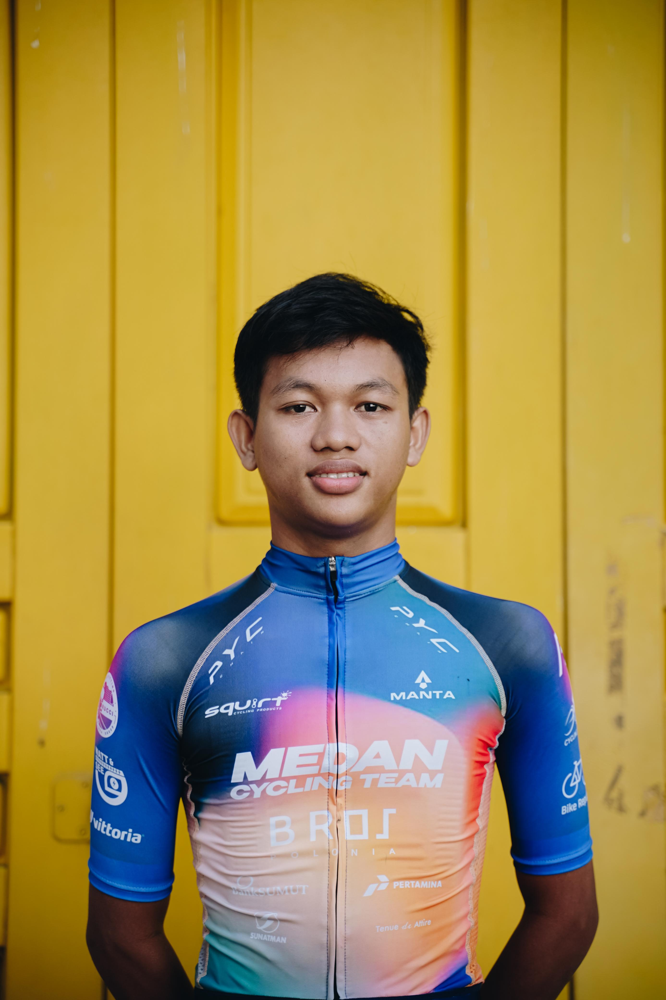

Foto Profil

📝 Tentang Saya
Halo! Perkenalkan nama saya Muhammad Raffi Fahru Inaya.
Saya lahir di Tanjung Baru pada tanggal 03 Agustus 2005.
Saat ini saya adalah mahasiswa jurusan Sistem Informasi
Fakultas Ilmu Komputer dan Teknologi Informasi
di Universitas Muhammadiyah Sumatera Utara.
Saya memiliki ketertarikan yang besar dalam bidang teknologi,
terutama web development dan artificial intelligence.
Saya selalu bersemangat untuk belajar hal-hal baru dan mengembangkan
keterampilan saya.
📋 Data Pribadi
- Nama Lengkap: Muhammad Raffi Fahru Inaya
- Tempat, Tanggal Lahir: Tanjung Baru, 03 Agustus 2005
- Alamat: Jl. Medan KM.22,5 DSN 1,Tanjung Baru Kabupaten Deli Serdang
- Status: Belum Menikah
- Agama: Islam
- Kewarganegaraan: Indonesia
🎨 Hobi & Minat
- Programming dan coding
- Bersepeda
- Bermain game
🎓 Riwayat Pendidikan
-
SD Negeri 106180 Tanjung Baru
(2012 - 2017)
-
SMP Negeri 05 Tanjung Morawa
(2017 - 2020)
-
SMK Negeri 01 Lubuk Pakam
(2020 - 2023)
-
S1 Sistem Informasi -
Universitas Muhammadiyah Sumatera Utara
(Sekarang)
📱 Social Media
Instagram
📞 Kontak Saya
🏆 Pencapaian
- Juara 3 Kejuaraan Daerah Sumatera Utara Cabang Olahraga Balap Sepeda
⏰ Jadwal Harian
| Waktu |
Kegiatan |
| 06.30 - 10.00 |
Bersepeda |
| 13.00 - 18.00 |
Kuliah |
| 20.00 - 20.30 |
Belajar |
| 20.30 - 23.00 |
Bermain Game |